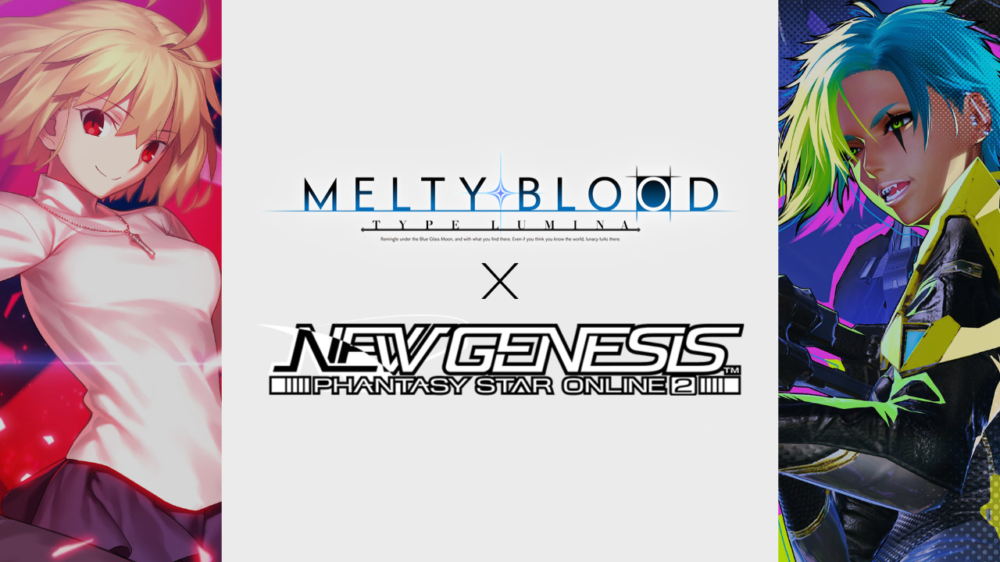
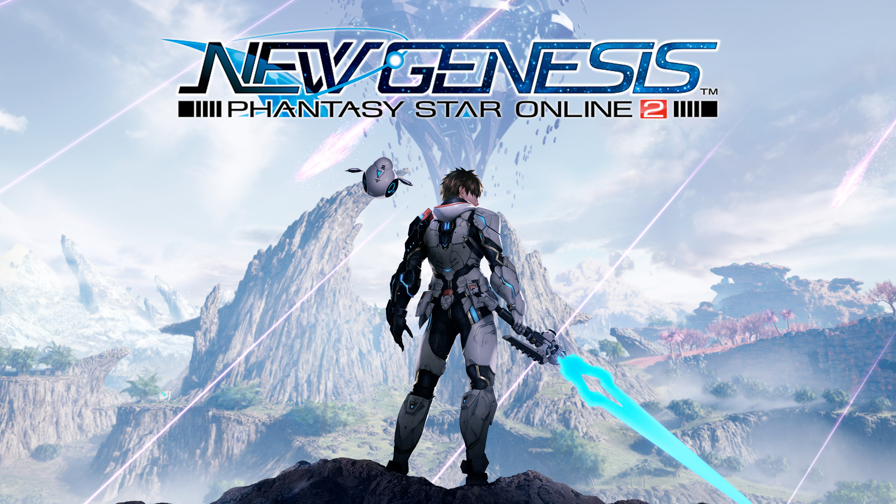
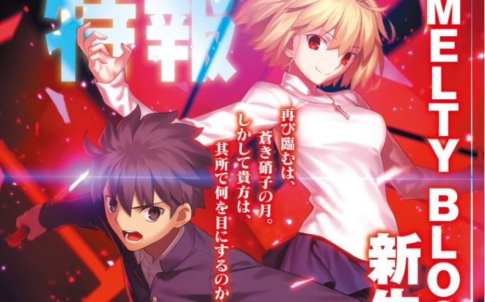
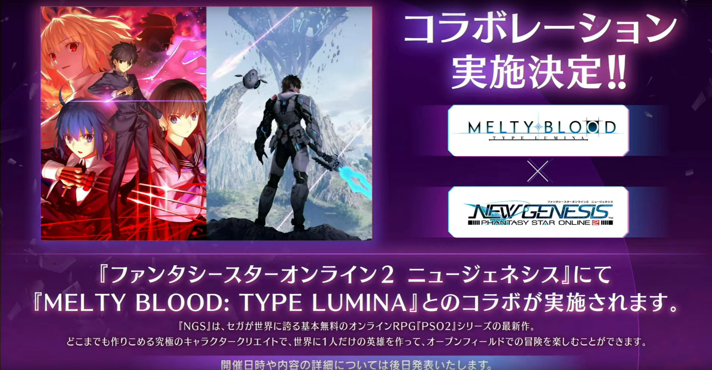
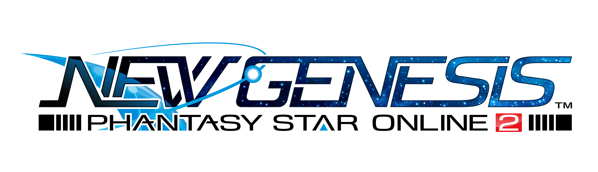

Phantasy Star Online 2 New Genises | |||
Em Phantasy Star Online 2, você é membro da ARKS, uma força-tarefa dedicada à exploração e proteção do universo contra uma força maligna chamada Falspawn. Vá em missões com um grupo de até quatro jogadores ou explore áreas com vários participantes exclusivas onde até doze jogadores podem jogar simultaneamente! |
 | ||
|  | |||
|  | |||
|  | |||